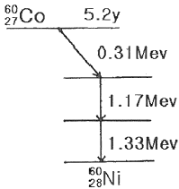
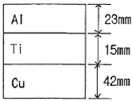
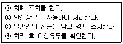

방사선비파괴검사기사 (2016-03-06 기출문제)
1과목: 비파괴검사 개론
1. 방사선투과시험과 비교한 초음파탐상시험의 장점과 거리가 먼 것은?
- 시험체 두께에 대한 영향이 적다.
- 미세한 균열성 결함의 검사에 유리하다.
- 결함의 형태와 종류를 쉽게 알 수 있다.
- 한쪽 면에서만 접근할 수 있어도 탐상이 가능하다.
(정답률: 68%)

2. 다음 중 레이저(laser)와 관계가 없는 비파괴검사법은?
- 광 홀로그램(Optical holography)
- 광탄성 피막 검사(Photelastic coating test)
- 모아레 검사(Moire test)
- 보아스코프 검사(Borescope test)
(정답률: 78%)
3. 누설 시험에서 온도를 측정하는 온도계 중 비접촉식 온도계로 옳은 것은?
- 유리 온도계
- 방사 온도계
- 저항 온도계
- 열전대 온도계
(정답률: 57%)
4. 다음 중 모세관속에 있는 액체의 높이와 관련이 먼 것은?
- 밀도
- 표면장력
- 점성
- 접촉각
(정답률: 56%)
5. 다음 비파괴검사 중 방사선검사와 가장 관계가 먼 것은?
- X선 투과검사
- γ선 투과검사
- 중성자 투과검사
- X선 회절 분석
(정답률: 66%)
6. 고융점 금속에 관한 설명으로 틀린 것은?
- 증기압이 낮다.
- Mo는 체심방격자를 갖는다.
- 융점이 높으므로 고온강도가 크다.
- W, Mo는 열팽창계수가 높고, 탄성률이 낮다.
(정답률: 43%)
7. 순철의 자기변태와 동소변태를 설명한 것 중 옳은 것은?
- 자기변태는 결정격자가 변하는 변태이다.
- 동소변태란 결정격자가 변하지 않는 변태를 말한다.
- 동소변태점은 A1점이고, 자기변태 점은 923℃이다.
- 동소변태점은 A3점과 A4점이고, 자기변태점은 768℃이다.
(정답률: 66%)
8. 다음 합금 원소 중에서 강의 경화능을 가장 많이 향상시키는 원소는?
- B
- Mo
- Cr
- Cu
(정답률: 36%)
9. 재료의 연성을 알기 위한 것으로 구리판, 알루미늄판 등의 판재를 가압성형하여 변형 능력을 시험하는 것은?
- 마모시험
- 에릭센시험
- 크리프시험
- 스프링시험
(정답률: 61%)
10. 조직이 (α+β)로서 상온에서의 전연성을 낮으나 강도가 높아 기계부품 등으로 사용되는 황동은?
- 60%Cu~40%Zn
- 70%Cu~30%Zn
- 80%Cu~20%Zn
- 95%Cu~5%Zn
(정답률: 65%)
11. 가단주철의 특징으로 옳은 것은?
- 담금질 경화성이 없다.
- 경도는 Si 량이 많을수록 낮다.
- 충격성은 높으나, 절삭성이 나쁘다.
- 백주철의 시멘타이트로부터 흑연을 생성한다.
(정답률: 64%)
12. 은백색의 금속으로 비중이 약 1.85 이며, 중성자를 잘 통과 시키므로 원자로 연료의 피복제, 중성자의 반사재나 원자핵분열기에 사용되는 금속은?
- Ge
- Be
- Si
- Te
(정답률: 74%)
13. Cu-Pb계로 고속, 고하중에 적합한 베어링용 합금의 명칭은?
- 켈멧(Kelmet)
- 크로멜(Chromel)
- 슈퍼인바(Superinver)
- 백 메탈(Back metal)
(정답률: 80%)
14. 비강도가 크며, 항공우주용 재료에 사용되며, 비중이 Al의 약 2/3 정도 되는 금속은?
- Cd
- Cu
- Mg
- Zn
(정답률: 90%)
15. Fe-C 평형상태도에서 가장 높은 온도에서 일어나는 변태는?
- 공석변태
- 고정변태
- 포정변태
- 포석변태
(정답률: 58%)
16. 이산화탄소 아크용접에서 기공의 발생 원인이 아닌 것은?
- 이산화탄소 가스 유량이 부족하다.
- 노즐에 스패터가 많이 부착되어 있다.
- 공기가 침입해 들어간다.
- 이산화탄소 가스 순도가 매우 높다.
(정답률: 50%)
17. 연강용 피복아크 용접봉 심선의 재료로 사용되는 것은?
- 고장력강(high strength steel)
- 저탄소림드강(low carbon rimmed steel)
- 가단주철(malleable cast iron)
- 주강(cast steel)
(정답률: 68%)
18. 불활성 가스 금속 아크 용접의 장점으로 틀린 것은?
- 수동 피복 아크 용접에 비해 용착효율이 높다.
- 불활성 가스 텅스텐 아크 용접에 비해 전류밀도가 높다.
- 탄산가스 아크 용접에 비해 스패터 발생이 적다.
- 불활성 가스 텅스텐 아크 용접에 비해 얇은판 용접에 적합하다.
(정답률: 50%)
19. 전류가 높고 아크 길이가 특히 긴 경우에 발생하며, 용접금속 비산에 의한 용접봉의 손실을 초래하는 결함은?
- 기공
- 오버 랩
- 용입 불량
- 스패터
(정답률: 61%)
20. 다음 용접 결함 중 구조상의 결함이 아닌 것은?
- 기공
- 융합 불량
- 언더컷
- 연성 부족
(정답률: 75%)
2과목: 방사선투과검사 원리
21. 다음 중 X선의 설명으로 옳은 것은?
- He의 원자핵이다.
- 양자이다.
- 중성자이다.
- 전자파이다.
(정답률: 61%)
22. X선관에서 발생하는 X선의 스펙트럼에 대하여 틀린 것은?
- 관전압이 높을수록 X선의 투과력은 증가한다.
- 관전압이 높을수록 최고강도를 나타내는 파장은 단파장쪽으로 이동한다.
- 관전압이 일정할 때 관전류를 증가시키면 최단파장을 짧아진다.
- 관전압이 일정할 때 관전류를 증가시키면 X선 강도는 증가한다.
(정답률: 56%)
23. 다음 중 미소 결함에 대한 투과사진의 콘트라스트를 높이는데 필요한 내용으로 옳은 것은?
- 가능한 한 감마값이 낮은 X-선 필름을 사용한다.
- 가능한 한 사진농도를 낮게 촬영한다.
- 가능한 한 높은 X-선 관전압을 사용하여 촬영한다.
- 가능한 한 산란선이 적어지도록 작업한다.
(정답률: 76%)
24. 다음 중 방사선투과사진에 필요한 물리적 특성과 거리가 먼 것은?
- 투과
- 회절
- 직진
- 감광
(정답률: 50%)
25. 방사선투과 촬영 시 조사각도에 따라 결함검출감도에 가장 영향을 많이 받는 결함의 종류는?
- 균열
- 기공
- 슬래그
- 언더컷
(정답률: 52%)
26. 다음 중 Co-60의 붕괴도에서 0.31MebV에 해당하는 방사선은?

- β+
- β-
- γ
- α
(정답률: 50%)
27. 방사선투과시험에 사용되는 선원의 크기는 가능한 한 작아야 한다. 다음 중 그 이유로 가장 옳은 것은?
- 관전류를 낮추기 위함이다.
- 장비의 크기를 작게 하기 위함이다.
- 선명한 상(image)을 얻기 위함이다.
- 단위 면적당 발생 열량을 줄이기 위함이다.
(정답률: 67%)
28. 방사선원이 점 선원이라면 거리에 따른 방사선의 선량은?
- 방사선의 강도는 거리에 비례한다.
- 방사선의 강도는 거리에 반비례한다.
- 방사선의 강도는 거리제곱에 비례한다.
- 방사선의 강도는 거리제곱에 반비례한다.
(정답률: 52%)
29. 연박증감지를 사용하여 방사선투과검사를 한 결과 선명도가 좋지 않았다. 그 개선책으로 옳은 것은?
- 입도가 큰 필름을 사용한다.
- 초점이 큰 선원을 사용한다.
- 형광 증감지를 사용한다.
- 선원과 필름간의 거리를 증가시킨다.
(정답률: 58%)
30. 다음 중 필름을 개봉하여도 필름에 미치는 영향이 가장 적은 환경은?
- 황화수소가 발생하는 장소
- 헬륨 가스가 발생하는 장소
- 포르말린 증기가 발생하는 장소
- 암모니아 가스가 발생하는 장소
(정답률: 70%)
31. 다음 중 피사체 콘트라스트에 영향을 미치지 않는 것은?
- 시험체의 두께차
- 방서선 선질
- 산란방사선
- 투과도계
(정답률: 70%)
32. 그림과 같이 조합된 경우 방사선투과 촬영을 할 때 강에 대한 노출도표상에 적용해야 할 투과두께는? (단, 등가계수는 Al : 0.12, Ti : 0.42, Cu : 1.4이다.)

- 33.60mm
- 51.73mm
- 67.86mm
- 80.00mm
(정답률: 58%)
33. 방사선의 검출원리와 직접 관련이 있는 성질은?
- 스펙트럼 방출
- 이온화 성질
- 탄성산란 성질
- 단일 에너지(monoenergy)
(정답률: 46%)
34. 다음 중 명료도에 영향을 주는 것이 아닌 것은?
- 방사선의 선질
- 스크린-필름간 접촉 상태
- 필름의 입상성
- 필름의 농도
(정답률: 32%)
35. 다음 중 2차 방사선 또는 산란방사선의 영향을 줄이기 위해 시험체 주위에 놓는 고밀도의 물질은?
- 필터
- 마스크
- 카세트
- 계조계
(정답률: 55%)
36. 다음 중 현상처리된 필름을 저장할 때 고려해야 할 사항 중 거리가 먼 것은?
- 화학증기가 존재하는 곳은 피해야 한다.
- 온도와 습도가 자주 변하는 곳은 피해야 한다.
- 필름의 보관은 가능하면 새로운 필름포장에 넣어 보관해야 된다.
- 필름에 간지가 쌓여 있으면 여러 장의 필름을 하나의 봉투에 넣어 보관해도 된다.
(정답률: 67%)
37. 방사선의 노출인자를 결정할 때 고려해야 할 내용으로 잘못된 것은?
- X선의 경우, 관전압은 노출시간을 좁을 함계로 유지시키는 변수이다.
- γ선의 경우, 방사선의 선질 및 강도가 가변적이다.
- X선의 경우, 다른 인자가 허용하는 한 관전압을 낮게 한다.
- γ선의 경우, 검사자가 조절할 수 있는 것은 선원-필름간거리, 노출시간 등이다.
(정답률: 50%)
38. 다음 중 방사선투과검사에서 H&D곡선을 사용하는 목적으로 적절한 것은?
- 노출도표를 작성할 때
- 콘트라스트(contrast)를 이용하여 결함의 깊이를 측정하고자 할 때
- 명료도(definition)에 영향을 주는 인자를 찾고자 할 때
- 콘트라스트(contrast)에 영향을 주는 인자를 찾고자 할 때
(정답률: 53%)
39. X선이나 γ선이 필름에 부딪쳤을 때 흡수되는 에너지는 대략 몇 %이하인가?
- 약 1%이하
- 약 10%이하
- 약 30%이하
- 약 50%이하
(정답률: 52%)
40. 방사선방어 목표를 달성하기 위한 적극적 관리 개념에 속하는 것은?
- 방사선원의 관리
- 환경의 관리
- 개인의 관리
- 집단의 관리
(정답률: 56%)
3과목: 방사선투과검사 시험
41. 방사선투과검사에 대한 다음 설명 중 옳은 것은?
- 다른 부위보다 얇은 부위를 투과한 X선은 필름을 더 많이 감광시킨다.
- 방사선의 흡수정도는 검사물의 원자번호와 무관하다.
- 방사선의 흡수정도는 검사물의 밀도와 무관하다.
- 방사선의 흡수정도는 방사선 에너지와 무관하다.
(정답률: 81%)
42. 방사선투과검사시 노출조건을 관전류 5mA, 선원-필름간 거리 20cm, 노출시간을 2분간 적용하여 양호한 사진을 얻었다. 다음 중 양호한 사진을 얻기 위한 조건은?
- 관전류 5mA, 선원-필름간 30cm, 노출시간을 2분
- 관전류 2mA, 선원-필름간 10cm, 노출시간을 1.25분
- 관전류 5mA, 선원-필름간 15cm, 노출시간을 10분
- 관전류 5mA, 선원-필름간 30cm, 노출시간을 1분
(정답률: 48%)
43. 필름에 직접 접촉된 납스크린의 효과가 아닌 것은?
- 산란방사선의 영향을 증가시킨다.
- 필름의 사진 작용을 증대한다.
- 1차방사선에 비해 파장이 긴 산란방사선을 흡수한다.
- 방사선투과 사진상의 콘트라스트와 선명도를 증대시킨다.
(정답률: 69%)
44. 대부분의 공업용 X선 발생장치의 표적물질로 텅스텐이 사용되고 있는데 그 외 어느 재질이 공업용 X선관의 표적물질로 사용되는가?
- 베릴륨(Be)
- 금(Au)
- 아연(Zn)
- 게르마늄(Ge)
(정답률: 54%)
45. 현상액의 활성도는 필름의 특성 중 어느 것에 가장 크게 영향을 미치는가?
- 입상성
- 기하학적 조건
- 고유 불선명도
- 피사체 콘트라스트
(정답률: 58%)
46. Ir-192 감마선 조사장치를 선택할 때 고려하지 않아도 되는 것은?
- 선원도 강도
- 감마선원의 에너지
- 용기의 노출방식
- 선원의 기하학적 크기
(정답률: 40%)
47. 필름의 입사된 빛의 강도와 필름을 투과한 빛의 강도 비인 투과율이 0.25일 때 투과사진의 농도는 약 얼마인가?
- 0.2
- 0.4
- 0.6
- 1.0
(정답률: 49%)
48. 다음 중 강철주물 결함에 해당하지 않는 것은?
- 용락(Burn through)
- 기공 및 블로홀(Gas and Blow hole)
- 내부 수추관(Internal shrinkage)
- 개재물(Inclusion)
(정답률: 60%)
49. X-선 관(tube)의 기본구조의 명칭과 관계가 없는 것은?
- 양극과 음극
- 콜리메타
- 집속 컵
- X-선관 창
(정답률: 60%)
50. 방사선투과검사의 필름현상처리 과정 중 정지액과 정착액에 공통적으로 포함되어 있는 것은?
- 디오황산나트륨
- 염화알루미늄
- 초산(Acetic Acid)
- 붕산(Boric Acid)
(정답률: 53%)
51. 방사선투과시험에서 Ir-192 감마선원을 사용하는 검사체의 최소 두께에 대한 올바른 것은?
- 철판 10mm
- 철판 19mm
- 철판 38mm
- 요구되는 상질을 만족하는 경우 최소 두께를 한정하지 않는다.
(정답률: 56%)
52. 높은 투과사진 콘트라스트를 얻기 위한 조건이 아닌 것은?
- 필름콘트라스트가 커야 한다.
- 선흡수계수가 커야 한다.
- 기하학적 보정계수가 커야 한다.
- 산란비가 커야 한다.
(정답률: 52%)
53. 공업용 X선 발생장치의 필라멘트의 재료로 적합한 것은?
- 텅스텐
- 스테인리스강
- 알루미늄
- 탄소강
(정답률: 56%)
54. 산란 방사선과 필터의 특성으로 틀린 것은?
- 방사선 중 많은 부분이 산란과정에서 파장이 길어진다.
- 필름에 영향을 주는 산란방사선 중 가장 큰 부분은 시험체 자체로 부터의 산란이다.
- 필터에 의한 감소된 강도를 보상해주기 위해 노출을 증가하거나 전압을 올린다.
- 강한 언더컷이 유발될 수 있는 경우 필터를 사용하면 콘트라스트를 감소시킬 수 있다.
(정답률: 40%)
55. 공업용 방사선투과 사진을 촬영할 때 기본적인 3가지 필수사항이 아닌 것은?
- 필름
- 차폐물
- 방사선 선원
- 시험 대상물
(정답률: 83%)
56. 220 kV, X선으로 20mm 동판을 촬영하려면 몇mm 철판을 촬영할 때와 노출시간이 같아야 하는가? (단, 구리의 X선 등가계수는 1.4이다.)
- 16mm
- 24mm
- 28mm
- 32mm
(정답률: 56%)
57. 일반적으로 한쪽 덧붙임이 있는 맞대기 용접부를 감마선을 이용하여 검사할 때 최고 농도를 나타내는 장소는?
- 시험부의 중앙 용접부
- 시험부의 양끝 용접부
- 시험부의 중앙 열영향부
- 시험부의 양끝 열영향부
(정답률: 44%)
58. X-선이 타켓(표적)에서 X-선관의 방사구까지 통과하는 부분 모두에 의한 여과를 무엇이라 하는가?
- 고유 여과
- 공칭 여과
- 특성 여과
- 구조 여과
(정답률: 66%)
59. 공업용 X선 발생장치에서 노출표는 제조자로부터 제공받는다. 이 노출표에서 사진의 농도가 1.5를 기준으로 작성된 경우, 사진의 농도를 3.0으로 노출시키고자 할 때 어떻게 하는 것이 옳은가?
- 노출표에서 읽은 값에 2배를 한다.
- 현상 시간을 2배로 한다.
- 적용 관전압을 2배로 한다.
- 필름특성곡선을 이용하여 두 농도차이를 선형척도 값으로 환산 후 그 값을 노출표에서 읽은 값에 곱한다.
(정답률: 59%)
60. 방사선 투과사진상에서 농도의 불균일성에 대한 시각적 느낌을 나타내는 것은?
- 입상성(Graininess)
- 감도(Sensitivity)
- 선명도(Definition)
- 입도(Granularity)
(정답률: 59%)
4과목: 방사선투과검사 규격
61. 방사선의 종류와 방사선가중치를 열거한 것으로 틀린 것은?
- 10 keV 미만의 중성자-2
- 20 keV의 중성자-10
- α입자-20
- 전자 및 뮤온-1
(정답률: 29%)
62. 보일러 및 압력용기에 대한 방사선투과검사(ASME Sec, Art.2)에 따라 시험절차서에 포함되어야 할 최소한의 항목이 아닌 것은?
- 두께 범위
- 사용 증감지
- 필름의 종류
- 검사체표면 조건
(정답률: 64%)
63. 강용접 이음부의 방사선투과 시험방법(KS C 0845)에 따라 투과사진에 의한 결함상에 대해 분류를 할 때 모재두께가 20mm인 시험체에 대한 투과사진을 10mm×10mm 시험시야로 관찰하여 결함점수가 5점일 때의 등급은? (단, 관찰된 결함은 1종 결함이다.)
- 1류
- 2류
- 3류
- 4류
(정답률: 58%)
64. 강용접 이음부의 방사선투과 시험방법(KS C 0845)에 따라 관용접부를 상질은 A급, 2중벽 단일면 촬영방법으로 할 때 20형 졔조계를 사용할 수 있는 경우로 옳은 것은?
- 관 두께가 20mm 이하
- 관 두께가 40mm 이하 40mm 이하
- 관 두께가 40mm 이하 50mm 이하
- 관 두께가 50mm 이하
(정답률: 50%)
65. 사용상 이상이 발견된 방법으로 가장 올바른 순서는?

- ⓐ-ⓑ-ⓒ-ⓓ
- ⓐ-ⓓ-ⓒ-ⓑ
- ⓓ-ⓑ-ⓐ-ⓒ
- ⓒ-ⓐ-ⓑ-ⓓ
(정답률: 65%)
66. 보일러 및 압력용기에 대한 방사선투과검사(ASME Sec, Art.2)에 의한 방사선투과시험시 표준 선형투과도계의 가장 가는 선의 굵기는?
- 0.0032인치
- 0.004인치
- 0.0⑤인치
- 0.010인치
(정답률: 69%)
67. 알루미늄 평판 접합 용접부의 방사선투과시험(KS D 0242)에 따라 투과 사진에 의한 흠집 점수를 구하는 방식에서 모재의 두께가 30mm일 때 산정하지 않는 흠집모양의 치수로 옳은 것은?
- 0.6mm 이하
- 1mm 이하
- 3mm 이하
- 5mm 이하
(정답률: 58%)
68. 보일러 및 압력용기에 대한 방사선투과검사(ASME Sec, Art.2)에서 검교정 시 농도계의 농도지시치는 스텝웨지 교정 필름에 표기된 실제 농도 값으로부터 얼마 이상 변하지 않은 경우 합격으로 하는가?
- ±0.01
- ±0.02
- ±0.⑤
- ±0.1
(정답률: 60%)
69. 다음 중 피폭저감화 조치가 아닌 것은?
- 방사선 작업특성에 부합하는 방호조치
- 방사선 차폐 및 시설의 적절한 배치
- 필름배지에 의한 차폐
- 적절한 작업공간의 확보
(정답률: 57%)
70. Co-60을 사용하여 작업할 때 서베이메터를 사용하여 조사선량을 측정해보니 10m 거리에서 5mR/hr이었다. 2mR/h의 조사선량 구역설정을 하기 위해서는 선원으로부터 거리가 얼마나 되어야 하는가?
- 12.5m
- 15.8m
- 20m
- 25m
(정답률: 48%)
71. 원자력안전법 시행규칙에서 규정하고 있는 일시적인 사용 장소의 변경신고 내용에 포함되어야 할 사항이 아닌 것은?
- 저장시설의 구조명세서
- 작업방법에 관한 설명서
- 필름의 종류
- 운반방법에 관한 설명서
(정답률: 83%)
72. 강 용접 이음부의 방사선 투과시험방법(KS B 0845)에 따라 용접부의 투과사진을 등급 분류할 때 1종 결함의 지름이 2.5mm인 것이 3개 있을 때 결함 점수는?
- 5점
- 6점
- 9점
- 11점
(정답률: 43%)
73. 다음 방사선안전관리 장비 중 방사선 피폭량을 측정할 수 없는 것은?
- 필름배지
- TLD
- 포켓도시미터
- Alarm meter
(정답률: 69%)
74. 보일러 및 압력용기에 대한 표준방사선투과검사(ASME Sec, Art.22 SE-1025)에서 시험체 두께 0.25인치, 투과도계 두께 0.0⑤인치, 식별구멍 직경 0.01인치 일 때 상질계의 감도는 몇 %인가?
- 1.5
- 2.0
- 2.5
- 3.5
(정답률: 49%)
75. 강 용접 이음부의 방사선 투과시험방법(KS B 0845) 방법에서 규정하는 투과도계 사용에 관한 사항으로 옳지 않은 것은?
- 일반형의 F형(강재) 혹은 S형(스테인리스)투과도계를 사용한다.
- 투과도계를 2개 부착할 경우에는 가는 선이 안쪽으로 향하게 배치한다.
- 원둘레 용접부에 대해서는 일반형의 F형을 사용할 수 있다.
- 원둘레 용접부에 대해서는 원칙적으로 띠형 투과도계를 사용해야 한다.
(정답률: 60%)
76. 1.5MeV γ선에 대한 콘크리트의 질량감쇠계수는 0.⑤19cm2/g, 밀도는 2.35g/cm3이다. 이 γ선에 대한 콘크리트의 반가층은 약 얼마인가?
- 3.6cm
- 4.3cm
- 5.7cm
- 6.9cm
(정답률: 41%)
77. 원자력안전법에 따른 방사선관리구역의 제한선량은?
- 5 μSv/시간
- 10 μSv/시간
- 15 μSv/시간
- 20 μSv/시간
(정답률: 69%)
78. 강 용접 이음부의 방사선 투과시험방법(KS B 0845)에서 결함의 종별에 포함되어 있지 않는 것은?
- 언더컷
- 용입 불량
- 갈라짐
- 텅스텐 혼입
(정답률: 61%)
79. 보일러 및 압력용기에 대한 방사선투과검사(ASME Sec, Art.2)에 따라 투과검사를 수행하는 검사자의 자격인정은 SNT-TC-1A 요건을 만족하도록 요구하고 있다. 고등학교를 졸업하고 처음 비파괴검사를 시작한 종사자가 방사선투과검사 Level Ⅰ의 자격인정을 받기 위해서는 방사선투과검사 분야에 최소 얼마의 경력기간이 요구되는가?
- 210시간
- 260시간
- 310시간
- 360시간
(정답률: 39%)
80. 방사선 직업종사자가 당해 업무에 종사하기 이전의 건강진단기록 및 방사선 피폭경력의 보존기간을 나타낸 것으로 올바른 것은?
- 1년
- 5년
- 10년
- 사업을 폐지할 때까지
(정답률: 43%)